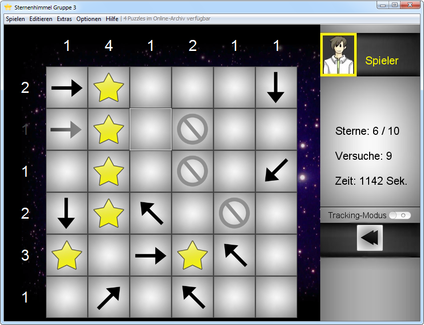
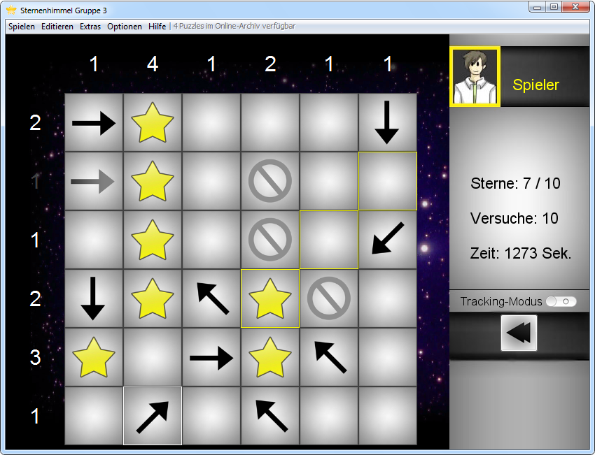

Ein Linksklick mit der Maus auf ein Feld, setzt einen Stern, ein Rechtsklick einen Ausschluss. Durch einen erneuten Klick, wird die getroffene Auswahl rückgängig gemacht. Doch Vorsicht, jeder Klick wird als weiterer Lösungsschritt gezählt und vermindert die erreichbare Punktzahl.

Zeigt man mit der Maus auf einen Pfeil, werden die Felder umrahmt, in denen ein sich ein Stern befinden könnte. Ebenso wird bei der Endpunktezahl die benötigte Zeit beachtet. Je schneller ein Sternenhimmel aufgedeckt ist, desto mehr Punkte gibt es.

Über die Menüleiste "Spielen - Spiel speichern unter..." kann ein Spiel jederzeit unterbrochen und gespeichert werden, das Spiel eignet sich also perfekt für den Büroalltag.
Während des Spiels kann mit dem Button "Zurück zum Fehler", bis zu dem Punkt zurückgesprungen werden, bei dem alle davor gesetzten Sterne und Ausschlüsse korrekt waren. Allerdings wird jedes zurückgesetzte Feld als weiterer Lösungsschritt gezählt.
Created with the Personal Edition of HelpNDoc: Create HTML Help, DOC, PDF and print manuals from 1 single source